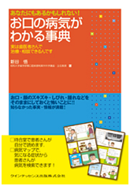
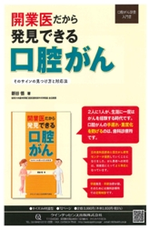

新谷 悟（しんたに さとる）
高松高校 昭和55年卒
(Last updated:2014.2)
プロフィール
1961年 12月19日 高松市生まれ
1980年 高松高校卒業
1988年 岡山大学歯学部 卒業
1992年 岡山大学大学院歯学研究科 修了、口腔外科第2講座入局
1994年 愛知県がんセンター頭頸部外科
1997年 ハーバード大学歯学部分子病理部門
2000年 愛媛大学医学部歯科口腔外科学講座 助教授
2006年 昭和大学歯学部顎口腔疾患制御外科学講座 主任教授
2012年 昭和大学口腔がんセンターセンター長（兼任）
2014年 東京銀座シンタニ歯科口腔外科クリニック 開設
中国・井岡山大学客員教授
カナダ・トロント大学 Faculty advisor
山口大学医学部非常勤講師
専門
口腔外科、口腔がん
「患者さんの病気を治す」、その一点に全てを注ぎ、よりよい・患者さんのための治療を行っている。
著書


「お口の病気がわかる事典」クインテッセンス出版
「開業医だから発見できる口腔がん」クインテッセンス出版
「口腔癌取扱い規約（分担執筆）」金原出版
「医師・歯科医師のための口腔診療必携（分担執筆）」金原出版
「こんな事故が起こったら ポケットブック トラブル＆リカバリ－（分担執筆）」デジタルダイヤモンド社
「口腔がん（分担執筆）」がん振興財団
「口腔内科学（分担執筆）」飛鳥出版
その他多数
新谷さんからのメッセージ
高松高校を卒業し補習科、その後の挫折を味わった劣等生の私ですが、岡山大学を卒業後、大学院に進学、口腔がん発がんに関する研究に従事し、博士号を修得。
その後も主に口腔がんの治療に携わり、愛知県がんセンター、岡山大学、ハーバード大学、愛媛大学、昭和大学顎口腔疾患制御外科学教室主任教授、口腔がんセンターセンター長を歴任し、2014年真の患者のための歯と口腔顎顔面の治療を患者さんの身になって行いたいとの思いから、東京銀座シンタニ歯科口腔外科クリニックを開院しました。
諸先輩の皆様、また同窓の皆様よろしくお願いします。
東京銀座シンタニ歯科口腔外科クリニック
Mail: sartorushintani@gmail.com